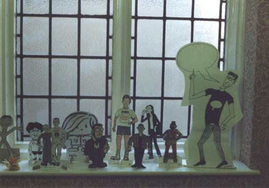

CAPTION
1996
CAPTION96
‘Lazy CAPTION’

By 1996, even Jeremy was employed. We just didn't have the time or the energy left over any more to bust a gut trying to get a convention together. On the other hand, as Adrian pointed out, we didn't have to. The infrastructure was all in place, we had copies of all the right forms, there were plenty of people who wanted to come already. Could we do a slacker convention? We could. People continued to attend in proxy, this time as cardboard dollies of themselves (which sold very well at the auction!), the National Theatre of Earth Prime did a well-received re-run of Robin Lives with Bruce and Alfred and, finding ourselves short of time to laze around in the sun in we extended the convention to Sunday. Gorgeous.
FLASHPOINT: CAPTION96
- Small Press Top Trumps created by dozens of (mostly) artistically-inclined small pressers. Albatross Mango trashes Rik's ego...
- Donna Barr channelled by Jenni Scott for readings from the Book of Stinz.
(From the CAPTION98 programme.)